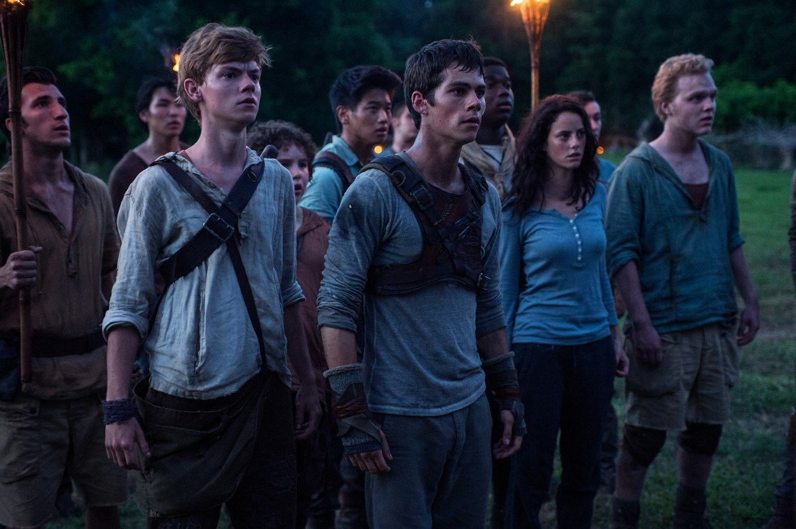
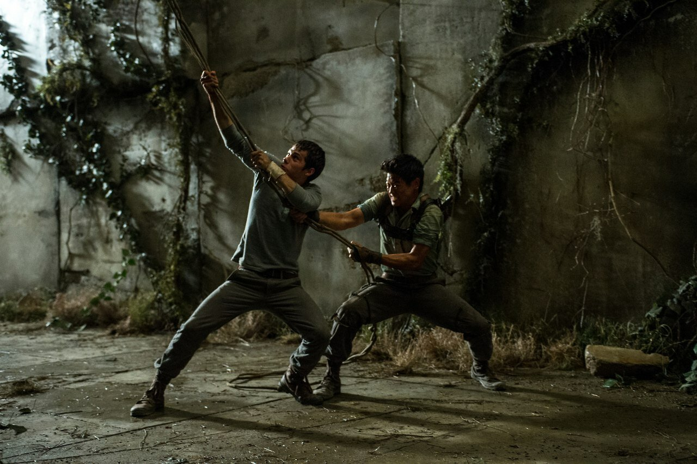

Бегущий в лабиринте (англ. The Maze Runner) — фильм в жанре молодёжной антиутопии, основанный на одноимённой книге Джеймса Дэшнера.
В главных ролях задействованы Дилан О’Брайен, Томас Броди-Сангстер и Кая Скоделарио. Концептуальный дизайн фильма создал Кен Бартелми.
 
Фильм был в целом положительно оценён в мировой кинопрессе. На сайте Rotten Tomatoes он имеет рейтинг 77 % на основе 246 рецензий со средней оценкой 7,7 баллов из 10.